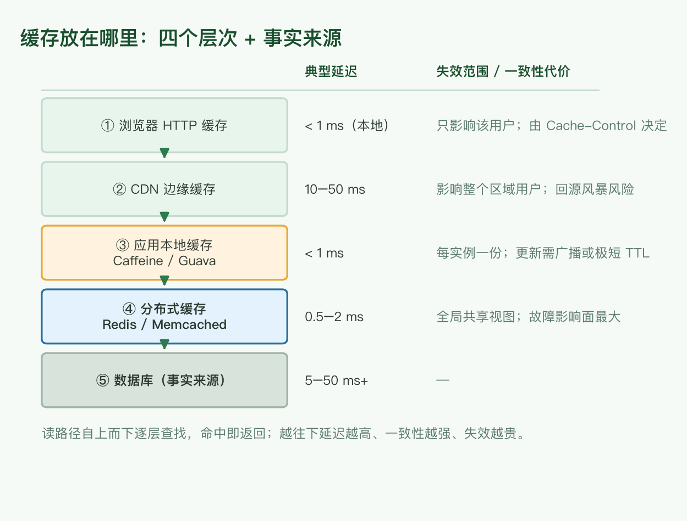
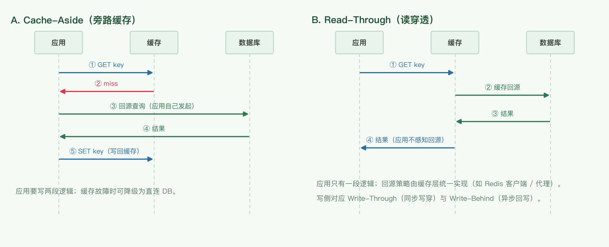

组件选型三篇之一：缓存放在哪、用什么、缓存什么、怎么读写；消息队列怎么选、保证什么、如何估算容量。
存储选型见 数据存储选型，分析栈见 数据处理与 OLAP。
缓存不是「加一层 Redis」，而是沿着请求链路逐层布置的四道闸门，外加作为事实来源的数据库。以电商商品详情页为例：图片与静态资源落在浏览器与 CDN，类目树落在应用本地内存，商品详情与库存落在 Redis，数据库始终是事实来源。

| 位置 | 典型实现 | 典型延迟 | 失效范围 / 一致性代价 |
|---|---|---|---|
| ① 浏览器 | Cache-Control、ETag、Service Worker |
< 1 ms（本地） | 只影响该用户；版本发布后旧页面可能滞留（用文件名 hash 或 no-cache 规避） |
| ② CDN 边缘 | 各家 CDN / 自建边缘节点 | 10–50 ms | 影响整个区域用户；缓存过期瞬间的回源风暴需要靠 request collapsing 兜住 |
| ③ 应用本地 | Caffeine（原文写的 Guava Cache，见 勘误） | < 1 ms | 每个实例一份；更新需要广播失效，或依赖极短 TTL |
| ④ 分布式 | Redis / Memcached | 0.5–2 ms | 全局共享视图；一旦故障，影响面覆盖所有实例 |
| ⑤ 数据库 | — | 5–50 ms+ | 事实来源，不承担缓存语义 |
Cache-Control: max-age 决定强制缓存，ETag / Last-Modified 决定协商缓存。product:all）命中率虚高但复用率低、更新代价大；key 太细（product:{id}:field:{f}）命中率低、内存放大。| 维度 | 应用本地（Caffeine） | 分布式（Redis / Memcached） |
|---|---|---|
| 延迟 | 纳秒 ~ 微秒级 | 0.5–2 ms（一次网络往返） |
| 容量 | 受单机堆内存限制 | 可独立扩缩，容量与业务实例解耦 |
| 一致性 | 每实例一份，更新需广播 | 全局单视图，删一次即全生效 |
| 失效 | 只能 TTL 兜底，或订阅发布广播删除 | 统一删除 |
| 故障影响 | 仅该实例（可能读穿到 DB） | 影响所有实例 |
多级缓存（本地 + 分布式 + DB）是常见组合：本地挡住最热的数据，分布式挡住中等热度的数据。代价是本地层的一致性——必须显式回答「能接受多大窗口的脏读」，要么用足够短的 TTL，要么用发布订阅广播失效。

| 模式 | 写侧行为 | 一致性 | 适用 |
|---|---|---|---|
| Cache-Aside（旁路缓存） | 应用写 DB 后删除缓存 | 有短暂窗口，需 TTL 兜底 | 最通用，业务完全可控 |
| Read-Through | 读时由缓存层负责回源（应用不感知） | 同 Cache-Aside | 应用逻辑简单，回源策略集中在缓存层 |
| Write-Through | 应用写缓存，缓存同步写 DB | 强（两者都成功才算成功） | 写后立刻要读到 |
| Write-Behind | 应用只写缓存，缓存异步刷 DB | 弱，缓存在刷盘前崩溃会丢数据 | 写吞吐优先，能容忍丢失 |
# 读：先查缓存，miss 回源并写回
def get_product(pid):
v = cache.get(f"product:{pid}")
if v is None:
v = db.query("SELECT * FROM product WHERE id = %s", [pid])
cache.set(f"product:{pid}", v, ttl=300) # TTL 兜底
return v
# 写：先写 DB，再删除缓存（不是更新缓存）
def update_product(pid, data):
db.execute("UPDATE product SET ... WHERE id = %s", [pid])
cache.delete(f"product:{pid}") # delete 而非 set
原文列出 5 点区别，其中两点表述有误，这里就地修正（完整清单见 第 10 节）。
| 维度 | Redis | Memcached |
|---|---|---|
| value 类型 | String / List / Set / Hash / Sorted Set / Stream / Bitmap / HyperLogLog | 仅 string / blob |
| 持久化 | RDB 快照 + AOF 日志 | 无，重启即全丢 |
| 数据位置 | 全部在内存（勘误：原文的「value 可能不在内存」指 Redis 2.4 前的 VM 机制，已废弃） | 全部在内存 |
| 过期与淘汰 | 支持 TTL 过期；淘汰策略可配（allkeys-lru / volatile-lru / allkeys-lfu 等） | 支持 TTL 过期；slab 内 LRU 淘汰 |
| 超过单机内存 | 靠 Redis Cluster 分片；磁盘只用于持久化 | 客户端一致性哈希分片 |
| 线程模型 | 主线程单线程处理命令（6.0 起 I/O 多线程） | 多线程 |
| 分布式方案 | Redis Cluster（原生分片）/ Sentinel（高可用）/ 代理层分片 | 客户端侧分片 |
消息队列一般用于异步通信：削峰、解耦、异步化。原文列出 9 条考察点，逐条展开如下。
| # | 考察点 | 说明 |
|---|---|---|
| 1 | 语言支持 | 尽量选客户端语言覆盖广的（Kafka / RabbitMQ / Pulsar 均有主流语言客户端），否则要为一种语言自研客户端 |
| 2 | 协议标准 | AMQP / STOMP / MQTT 等标准协议，还是私有协议；标准协议意味着更低的迁移成本与更丰富的现成工具 |
| 3 | 是否保序 | 多数 MQ 只保证单分区 / 单队列内有序。注意应用层重试依然会引入乱序：重试的消息会排到队尾 |
| 4 | 投递保证 | at-most-once / at-least-once / exactly-once，见 第 8 节 |
| 5 | 是否持久化 | 能否落盘、落盘后吞吐退化多少 |
| 6 | 消费者重连后续读 | 与第 4 条相关但不等价：取决于 ack 时机与 offset 提交策略 |
| 7 | 可扩展性 | 增加分区 / 节点能否线性扩容 |
| 8 | 延迟 | 端到端延迟量级（Kafka 批量化后 ms 级；传统 AMQP 更低延迟但吞吐低） |
| 9 | 竞争消费者 | Competing Consumers：多个消费者并行消费同一队列。这其实是特性而非选型维度，但它决定消费者组能否水平扩展 |
| 语义 | 行为 | 代价 | 典型实现 |
|---|---|---|---|
| At-most-once | 投递一次，失败即丢 | 无重复，可能丢消息 | 读取即 ack、自动提交 offset |
| At-least-once | 失败重试，直到被确认 | 不丢，但可能重复 | 处理成功后再 ack / 手动提交 offset |
| Exactly-once | 端到端不丢不重 | 分布式下没有直接机制，只能构造效果 | 上游 at-least-once + 下游幂等去重 |
缓存 $N$ 个条目、每条约 $S$ 字节，再加上 Redis 自身开销（字典、对象头、jemalloc 碎片，通常在 30%–50%）：
$$M \approx N \times S \times (1 + o), \quad o \in [0.3,\ 0.5]$$已知 QPS $Q$ 与命中率 $h$，落到数据库的读放大为：
$$\text{DB QPS} = Q \times (1 - h)$$所以「命中率从 95% 提到 99%」不是锦上添花：当 $Q = 100{,}000$ 时，数据库压力从 $5{,}000$ QPS 降到 $1{,}000$ QPS。
分区数取「吞吐需求」与「并行度需求」的较大者：
$$P = \max\left(\left\lceil \frac{T_{target}}{T_{partition}} \right\rceil,\ C_{consumers}\right)$$磁盘占用 = 写入速率 × 保留时长 × 副本数：
$$D = R \times T_{retention} \times r$$例：写入 $50\ \text{MB/s}$、保留 7 天、3 副本 → $50 \times 86400 \times 7 \times 3 \approx 90.7\ \text{TB}$。
| 场景特征 | 倾向 |
|---|---|
| 需要极高吞吐 + 分区内有序 + 可重放（日志、埋点、CDC） | Kafka 类分区日志 |
| 复杂路由（topic / routing key / 延迟队列）、低延迟 | RabbitMQ 类 AMQP broker |
| 多租户 + 存算分离 + 队列与流处理统一 | Pulsar 类分层存储架构 |
| 只想托管、按量付费、不在意极致吞吐 | 云托管队列（SQS 类） |
| 原文说法 | 问题 | 现在的说法 |
|---|---|---|
| 「redis 的 value 不一定在内存中，此时会比较慢」 | 描述的是 Redis 2.4 之前的 VM（虚拟内存）机制 | 2.4 起废弃，数据（key 与 value）全部在内存 |
| 「memcache 的 key 是会过期的，类似 LRU 淘汰」 | 把「过期」与「淘汰」混为一谈，且 Redis 同样支持两者 | 两者都支持 TTL 与 LRU；Memcached 的差异是无持久化、无复杂结构、多线程 |
| 「redis 会利用磁盘存放一些 value，所以可以存放大于机器内存的数据」 | 建立在已废弃的 VM 机制上 | 突破单机内存靠 Redis Cluster 分片；磁盘只用于持久化 |
| 「服务器本地缓存：Guava」 | Guava Cache 已停止演进 | Caffeine（Guava 作者重写，W-TinyLFU 淘汰算法，命中率更高） |
| 消费者重连能否续读「感觉是 4 的同一个问题」 | 与投递语义相关，但不等价 | 取决于 ack 时机与 offset 提交策略 |